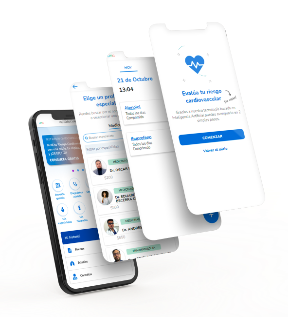

Diagnósticos inteligentes, clasificador de antecedentes y predicción de enfermedades son algunas de las herramientas que desarrollamos en HomeDoc para hacer más eficiente tu experiencia en nuestra plataforma
Planes mensuales desde $900
Suscribite para acceso ilimitado, o usá las prestaciones de acuerdo a tu obra social
Guardia médica online
Guardia médica online 24 hs. Evita la exposición,accede a la mejor atención desde la comodidad de tu casa, sin salas de espera ni demoras.
Especialista online
Mas de 20 especialidades disponibles. Visualiza la agenda del profesional y solicita un turno. Todo desde el mismo lugar y sin intermediarios.